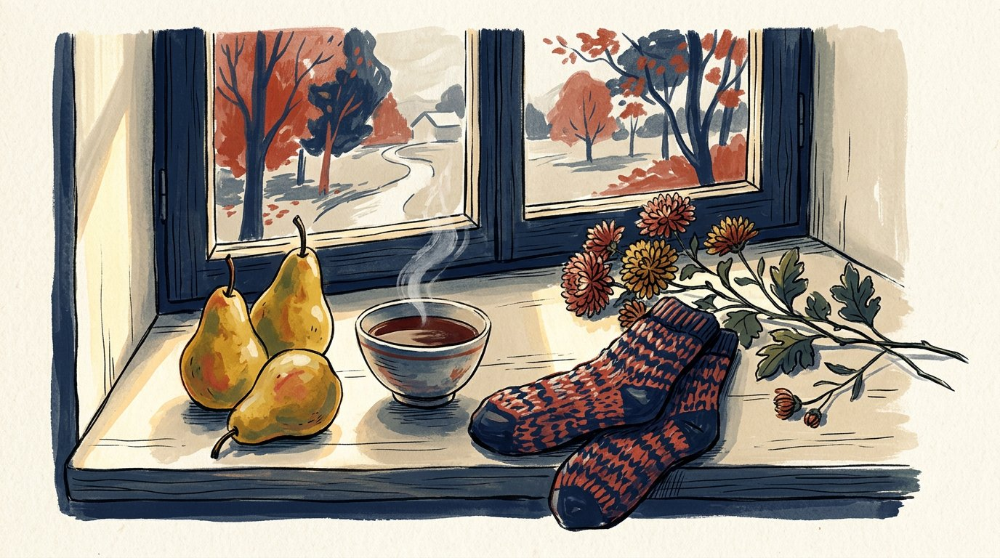
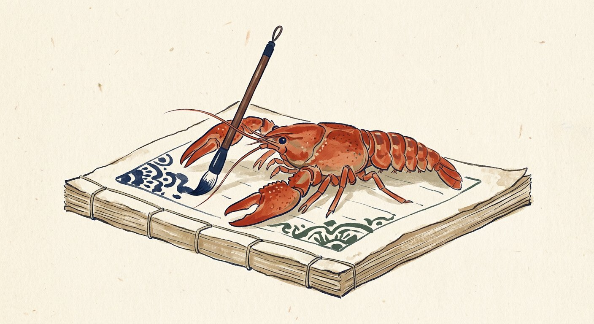
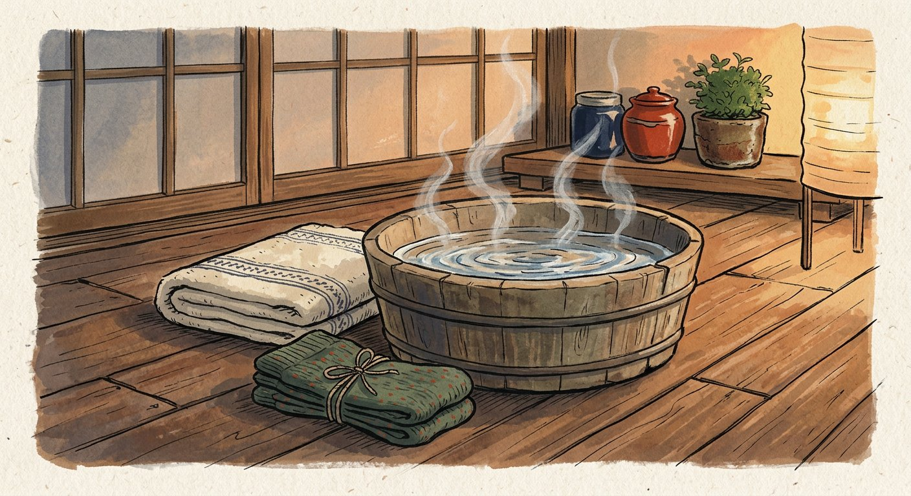
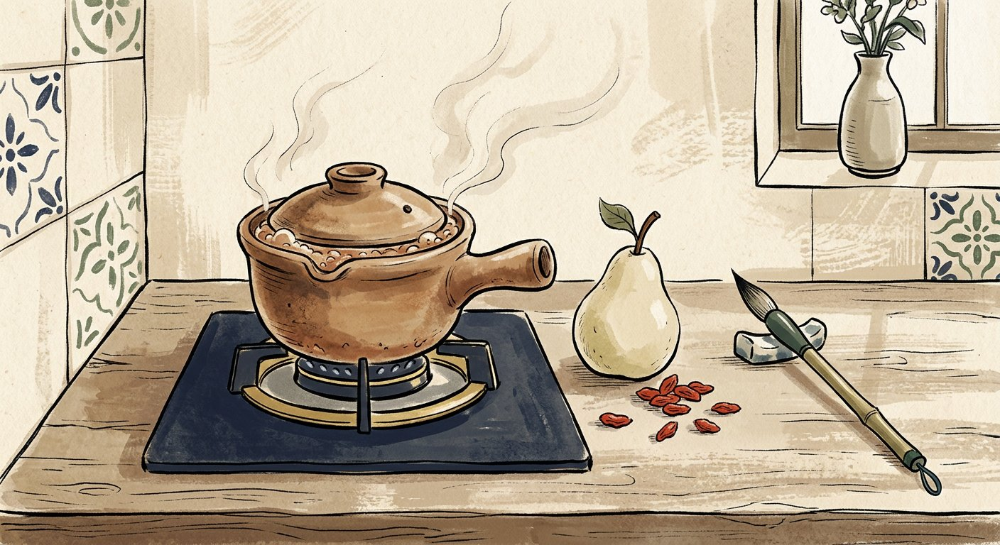

创作说明：本文由霓凰在 AI 辅助下创作，配图为 AI 生成。文中小龙虾灵宝为虚构角色，生活场景为综合改编。本文只讲生活养护常识，不替代医生的诊断与治疗。

🍐 寒露一过，家里的「干」都冒出来了
2026 年的寒露在 10 月 8 日 14 点 28 分。过了这一天，霓凰家先是孩子早上起来说嗓子紧，接着是她自己，洗完手不抹护手霜，指节就起一层白皮。
她那天站在厨房里想了一下：这不是什么大事，但家里每个人都在悄悄变干。她小时候外婆遇到这种情况从不急着找药，只会把窗关小一点，晚上多煮一锅东西。外婆常说一句话，大意是，一个会过日子的妈妈，抵得上半个医生。这话当然不是说妈妈能替代医生，而是说，大多数「不太舒服」其实是日子过得不太顺，先把日子理顺，往往就好了一半。
灵宝趴在画册上听见，用触须点了点屏幕：「你们人类的季节，是用嗓子感觉出来的。」
📜 古人怎么说秋天
《黄帝内经·素问》的《四气调神大论》里，有一段专门讲秋天：「秋三月，此谓容平，天气以急，地气以明，早卧早起，与鸡俱兴，使志安宁，以缓秋刑，收敛神气，使秋气平，无外其志，使肺气清，此秋气之应，养收之道也。」
这段话翻成白话，大意是：秋天的三个月，万物到了收成的时候，风变得劲急，天地间的景象变得清朗肃静。人也要跟着收一收，早点睡，早点起，跟着鸡的作息走，心里保持安宁，别让心思总往外飘，这样肺气才清爽。原文接着还有一句警示，说如果违背了这个节奏，会伤到肺，到了冬天身体的储备就不够。
霓凰读到「与鸡俱兴」四个字笑了出来。夏天是夜卧早起，到了秋天变成早卧早起，一个字的差别，落在她家就是：晚上十一点还在刷手机这件事，得改。

🌙 第一件事：把睡觉往前挪半小时
没有人能一夜之间从十一点半睡到九点半。霓凰的做法很笨：每天比前一天早十分钟关灯，三天挪半小时。孩子的就寝时间她直接定死，因为孩子不会跟你商量。
这样挪了一周，她发现早上嗓子发紧的次数确实少了。是不是睡觉的功劳她说不准，她家同时也开了加湿器。但有一点她很确定：早睡之后，早上起床没有以前那么恨闹钟。
🧦 第二件事：脚踝别露着
寒露前后有句流传很广的话：「寒露不露脚。」意思是天凉了，脚踝别光着。霓凰以前觉得这是长辈的唠叨，直到有一天穿着短袜坐在办公桌下，脚踝一阵一阵地凉，才发现凉的不是脚，是整个人都有点缩着。
她现在的做法很具体：办公室抽屉里放一双厚袜子，孩子的校服裤脚不再往上卷，出门前看一眼脚踝有没有盖住。至于「秋冻」，老话说「春捂秋冻」，但冻也要有个度，早晚温差大的日子，该加就加。

🍲 第三件事：晚上泡一次脚，再炖一锅梨
泡脚没有什么玄机。霓凰家的做法是：一个够深的盆，水温用手背试，不烫就行，泡十来分钟，到身上微微发热就擦干穿袜子。小提醒：如果家里有人糖尿病、脚部感觉迟钝，或者皮肤有破损，泡脚之前先问问医生，水温自己感觉不准，容易烫伤。
至于润燥，她家用的是很普通的办法：一个秋梨去核，放几颗枸杞和一小撮冰糖，隔水蒸或者小火炖二十分钟，晚饭后一人一小碗。银耳、百合、白萝卜也是同一类思路，都是家常食材，没有人需要为此专门去买什么贵东西。
她提醒自己，也提醒你：这些只是日子里的小照顾。如果嗓子干痒拖了很久，还伴着咳嗽、发热、气短，或者孩子有明显的不舒服，那就别在家硬扛，去看医生。

✨ 三条小建议
第一，今晚比平时早十分钟关灯，连续三天，再多挪十分钟。第二，给每个人的鞋柜门口放一双厚袜子，不用提醒，伸手就能拿到。第三，周末炖一次梨，全家人一起喝，顺便问问大家这一周嗓子怎么样。
霓凰那天晚上把梨端上桌，孩子喝完最后一口汤，抬头说：「妈妈，今天的梨比上次甜。」她没告诉他，其实只是多放了两颗枸杞。
💌 霓凰 记于周四清晨
资料来源
- 《黄帝内经·素问·四气调神大论》「秋三月」一节（引自中国哲学书电子化计划 ctext.org 与《类经》等版本，文字一致）。
- 2026 年寒露交节时间：10 月 8 日 14 时 28 分；霜降：10 月 23 日，据香港天文台等公布的节气数据。
- 「寒露不露脚」「春捂秋冻」为民间流传的养生说法，文中泡脚、炖梨为家庭生活做法，不构成医疗建议。